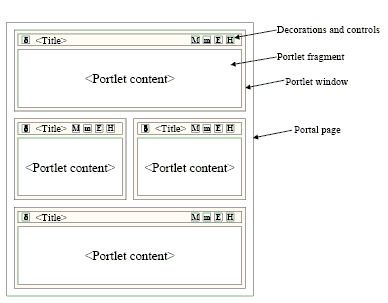

'
,
-
.
/
0
1
2
3
4
5
6
7
8
9
;
=
`
a
b
backslash
c
caps
d
delete
down
e
end
esc
f
f1
f10
f11
f12
f13
f14
f15
f16
f17
f18
f19
f2
f20
f3
f4
f5
f6
f7
f8
f9
g
h
help
home
i
j
k
l
left
m
mute
n
o
p
pad*
pad+
pad-
pad.
pad/
pad0
pad1
pad2
pad3
pad4
pad5
pad6
pad7
pad8
pad9
pad=
padClear
padEnter
pageDown
pageUp
q
r
return
right
s
space
t
tab
u
up
v
w
x
y
z
[
]
shell trên mac chạy không giống terminal (lỗi unicode khi build octopress, không tìm thấy ipython, …)
Giới thiệu
Emacs là một chương trình hỗ trợ nhiều tác vụ: quản lý thư mục tập tin, chỉnh sửa tập tin, lịch, máy tính, …
Buffer – Khi người dùng thực hiện 1 hành động, emacs sẽ tạo 1 buffer đại diện cho hành động đó. Ví dụ: người dùng đang xem 1 thư mục x, đang sửa nội dung 1 tập tin y, đang xem lịch thì emacs đang tạo ra 3 buffer đại diện cho 3 hành động đó.
Window là màn hình hiển thị của buffer. Trong emacs, tại một thời điểm, màn hình chính (window) có thể được chia làm nhiều màn hình con (windows)
Một buffer có thể được hiển thị cùng lúc bởi nhiều màn hình
Một màn hình chỉ hiển thị 1 buffer
Mỗi màn hình có con trỏ, vị trí của riêng nó. Ví dụ: 2 màn hình cùng hiển thị hành động chỉnh sửa tập tin x, nhưng màn hình 1 có thể đang ở đầu tập tin và màn hình 2 ở cuối tập tin
Frame là màn hình giao diện của emacs khi bắt đầu trên một hệ điều hành. Một frame có menu, thanh công cụ, và 1 màn hình. Màn hình đó có thể được chia thành nhiều windows. Bạn có thể tạo thêm frame khi cần. Nhiều frame được tạo trong cùng 1 phiên làm việc của Emacs sẽ dùng chung các buffers và dữ liệu.
Ghi trực tiếp vào tập tin cấu hình => Ctrl-c Ctrl-f => gõ ~/.emacs – Điền nội dung vào và lưu lại. Ví dụ: (global-set-key [(control x) (k)] ‘kill-this-buffer)
Các bước cài đặt Package
Sử dụng ELPA, MELPA, Marmalade
Alt-x list-packages
Một số thao tác
Enter: xem mô tả package
i: đánh dấu để cài đặt
u: bỏ đánh dấu
d: đánh dấu để xóa (các packages đã cài đặt)
r: refresh lại danh sách
U: cập nhật tất cả packages nếu có bản cập nhật
x: thực thi hành động
Các repos lưu trữ package
http://elpa.gnu.org/ Default. Official GNU Emacs package repository. This repository contains the minimal set, and are FSF signed.
Ctrl-f/b/n/p: di chuyển trước 1 ký tự/sau 1 ký tự/dòng tiếp theo/dòng phía trước
Alt-f/b: di chuyển trước 1 từ/sau 1 từ
Ctrl-a/e: di chuyển đầu dòng/cuối dòng
Alt-a/e: di chuyển đầu đoạn văn/cuối đoạn văn
Ctrl-d: xóa ký tự
Alt-d: xóa từ
Ctrl-v/Alt-v: page down/page up
Alt-</>: di chuyển bắt đầu tập tin/kết thúc tập tin
Alt-x replace-string: thay thế chuỗi (replact) – Alt-%
Soạn thảo tập tin với quyền root
Copy đoạn mã sau vào tập tin cấu hình
1234567891011121314
;; editor as root
(defun sudo-edit (&optional arg)
"Edit currently visited file as root.
With a prefix ARG prompt for a file to visit.
Will also prompt for a file to visit if current
buffer is not visiting a file."
(interactive "P")
(if (or arg (not buffer-file-name))
(find-file (concat "/sudo:root@localhost:"
(ido-read-file-name "Find file(as root): ")))
(find-alternate-file (concat "/sudo:root@localhost:" buffer-file-name))))
(global-set-key (kbd "C-x C-r") 'sudo-edit)
A portal is a web application that commonly provides personalization, single sign on, content aggregation from different sources, and hosts the presentation layer of information systems. Aggregation is the act of integrating content from different sources within a web page.
Three main parts
Portlet container
Content aggregator
Common services
Single sign on
Personalization
Elements of a portal page

Portlet
Similar to servlets, portlets are web components that are deployed inside of a container and generate dynamic content. On the technical side, a portlet is a class that implements the javax.portlet.Portlet interface and is packaged and deployed as a .war file inside of a portlet container
Similar to servlets
Portlets are managed by a specialized container.
Portlets generate dynamic content.
A portlet’s life cycle is managed by the container.
Portlets interact with web client via a request/response paradigm.
Different from servlets
Portlets only generate markup fragments, not complete documents.
Portlets are not directly URL addressable. You cant send somebody URL of a portlet. You can send him the URL of the page containing a portlet.
Portlets cannot generate arbitrary content, since the content generated by a portlet is going to be part of portal page. If a portal server is asking for html/text, then all portlets should generate text/html content. On the other hand, if the portal server is asking for WML, then each portlet should generate WML content.
operator is not allowed for source level below 1.7
=> In your project’s preferences, you must set the compiler —source option to 1.7 and —target option to 1.7 also. There are dedicated option boxes for that. Right-click on the project. Choose Properties. Choose Java Compiler on the left. Choose 1.7 for the Compiler Compliance level. If the 2 drop-downs below that aren’t 1.7, uncheck Use default compliance settings and set those to 1.7.